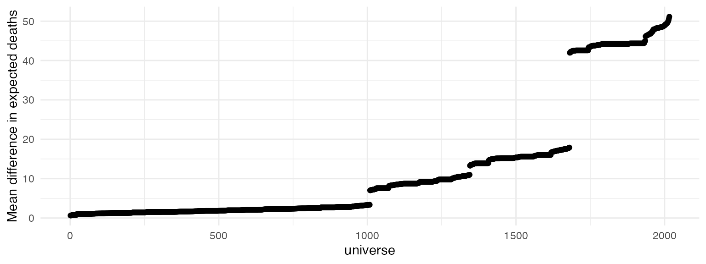

Example multiverse implementation: Female hurricanes are deadlier than male hurricanes
Abhraneel Sarma, Northwestern University
Alex Kale, University of Washington
2024-10-06
Source:vignettes/example-hurricane.Rmd
example-hurricane.RmdMultiverse case study #4
In this document we re-implement the specification curve analysis by Simonsohn et al. [http://dx.doi.org/10.2139/ssrn.2694998] using the Multiverse library.
Introduction
The specification curve analysis is in principle similar to a multiverse analysis, where all alternate specifications of a particular analysis asking the same research question are explored. In their study, Simonsohn et al. explore the robustness of the analysis by Jung et al. [https://doi.org/10.1073/pnas.1402786111], which investigated whether hurricanes with female sounding names are more deadlier than hurricanes with more male sounding names. We first begin by loading the dataset which is provided by the library. We then rename some of the variables and perform some data transformations which standardises some of the variables (mean = 0 and standard deviation = 1).
data("hurricane")
# read and process data
hurricane_data <- hurricane |>
# rename some variables
rename(
year = Year,
name = Name,
dam = NDAM,
death = alldeaths,
female = Gender_MF,
masfem = MasFem,
category = Category,
pressure = Minpressure_Updated_2014,
wind = HighestWindSpeed
) |>
# create new variables
mutate(
post = ifelse(year>1979, 1, 0),
zcat = as.numeric(scale(category)),
zpressure = -scale(pressure),
zwind = as.numeric(scale(wind)),
z3 = as.numeric((zpressure + zcat + zwind) / 3)
)Original analysis
We then illustrate an implementation of the original analysis by Jung
et al. [https://doi.org/10.1073/pnas.1402786111]. The original
analysis used a negative binomial model, which is suitable for
overdispersed count data. Due to some issues with model fit with the
MASS::glm.nb function (see Note 3: https://github.com/uwdata/boba/tree/master/example/hurricane),
we instead use the simpler poisson regression model which will ensure
that none of the models fail while fitting.
In the original analysis, Jung et al. exclude two hurricanes which caused the highest number of deaths (Katrina and Audrey) as outliers. They transform the variable used the interactions between the 11-point femininity rating and both damages and zpressure respectively, as seen below:
Multiverse Analysis
To implement a multiverse analysis, we first need to create the multiverse object:
M <- multiverse()Excluding outliers
In their implementation, Simonsohn et al. describe a principled
method of excluding outliers based on extreme observations of death and
damages. The consider it reasonable to exclude up two most extreme
hurricanes in terms of death, and upto three most extreme hurricanes in
terms of damages. This space of decisions is implemented using
multiverse as follows:
Note
In this vignette, we make use of multiverse
code chunks, a custom engine designed to work with the
multiverse package, to implement the multiverse analyses. Please refer
to the vignette (vignette("multiverse-in-rmd")) for more
details. Users could instead make use of the function which is more
suited for a script-style implementation. Please refer to the vignettes
(vignette("complete-multiverse-analysis") and
vignette("basic-multiverse")) for more details.
```{multiverse default-m-1, inside = M}
df <- hurricane_data |>
filter(branch(death_outliers,
"no_exclusion" ~ TRUE,
"most_extreme_deaths" ~ name != "Katrina",
"most_extreme_two_deaths" ~ ! (name %in% c("Katrina", "Audrey"))
)) |>
filter(branch(damage_outliers,
"no_exclusion" ~ TRUE,
"most_extreme_one_damage" ~ ! (name %in% c("Sandy")),
"most_extreme_two_damage" ~ ! (name %in% c("Sandy", "Andrew")),
"most_extreme_three_damage" ~ ! (name %in% c("Sandy", "Andrew", "Donna"))
))
```Identifying independent variables
The next decision involves identifying the appropriate independent variable for the primary effect — how do we operationalise femininity of the name of a hurricane. Simonsohn et al. identify two distinct ways. First, using the 11 point scale that was used in the original analysis; or second using a binary scale.
The other decision involved is whether or not to transform
damages, another independent variable. damages follow a
long tailed, positive only valued distribution.
We implement these two decisions in our multiverse as follows:
```{multiverse label = default-m-2, inside = M}
df <- df |>
mutate(
femininity = branch(femininity_calculation,
"masfem" ~ masfem,
"female" ~ female
),
damage = branch(damage_transform,
"no_transform" ~ identity(dam),
"log_transform" ~ log(dam)
)
)
```Declaring alternative specifications of regression model
The next step is to fit the model. We can use either a log-linear
model or a poisson model for the step. Both are reasonable alternatives
for this dataset. We also have to make a choice on whether we want to
include an interaction between femininity and
damage. This results in the following specification:
```{multiverse label = default-m-3, inside = M}
fit <- glm(branch(model, "linear" ~ log(death + 1), "poisson" ~ death) ~
branch(main_interaction,
"no" ~ femininity + damage,
"yes" ~ femininity * damage
) + branch(other_predictors,
"none" ~ NULL,
"pressure" %when% (main_interaction == "yes") ~ femininity * zpressure,
"wind" %when% (main_interaction == "yes") ~ femininity * zwind,
"category" %when% (main_interaction == "yes") ~ femininity * zcat,
"all" %when% (main_interaction == "yes") ~ femininity * z3,
"all_no_interaction" %when% (main_interaction == "no") ~ z3
) + branch(covariates, "1" ~ NULL, "2" ~ year:damage, "3" ~ post:damage),
family = branch(model, "linear" ~ "gaussian", "poisson" ~ "poisson"),
data = df)
```Once we have implemented the analysis model in our multiverse, the corresponding step will be applied to each analysis path. To interpret the results, we first estimate a prediction interval corresponding to each analysis path.
```{multiverse label = default-m-4, inside = M}
pred <- predict(fit, se.fit = TRUE, type = "response")
pred2expectation <- function(mu, sigma) {
branch(model, "linear" ~ exp(mu + sigma^2/2) - 1, "poisson" ~ mu)
}
disagg_fit <- df |>
mutate(
fitted = pred$fit, # add fitted predictions and standard errors to dataframe
se.fit = pred$se.fit,
deg_f = df.residual(fit), # get degrees of freedom
sigma = sigma(fit), # get residual standard deviation
se.residual = sqrt(sum(residuals(fit)^2) / deg_f) # get residual standard errors
)
# aggregate fitted effect of female storm name
expectation <- disagg_fit |>
mutate(expected_deaths = pred2expectation(fitted, sigma)) |>
group_by(female) |>
summarise(mean_deaths = mean(expected_deaths), .groups = "drop_last") |>
compare_levels(mean_deaths, by = female)
```Execution and Results
After we’ve specified our multiverse analysis, we would like to
execute the entire multiverse, and view the results. Below, we plot the
mean difference point estimate for expected deaths when a hurricane has
a more feminine name, for each unique analysis path. We find that based
on these arbitrary specifications of the multiverse, there is perhaps no
relation between femininity of the name of a hurricane and
the number of deaths that it causes, as some models predict a lower
number of deaths, and some predict much higher.
execute_multiverse(M)
mean_deaths <- multiverse::expand(M) |>
extract_variables(expectation) |>
unnest(expectation)
mean_deaths |>
arrange(mean_deaths) |>
mutate(.id = row_number()) |>
ggplot(aes(y = mean_deaths, x = .id)) +
geom_point() +
theme_minimal() +
labs(x = "universe", y = "Mean difference in expected deaths")